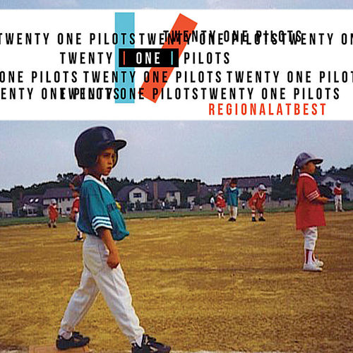
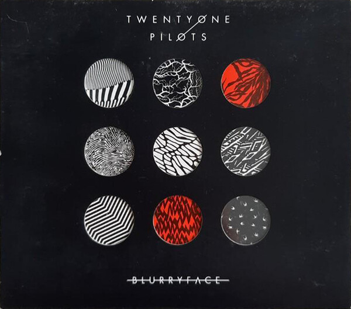
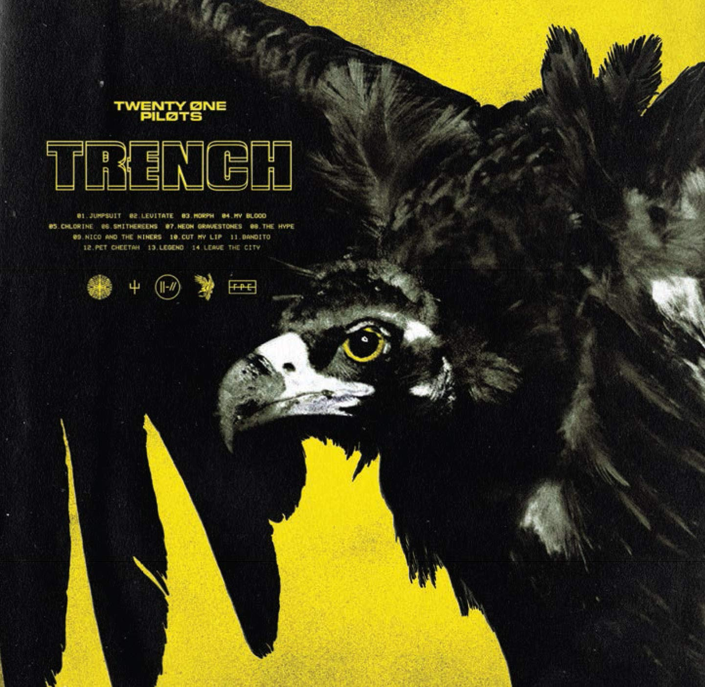
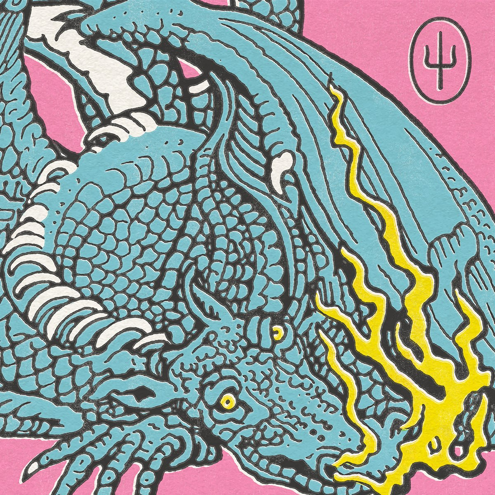
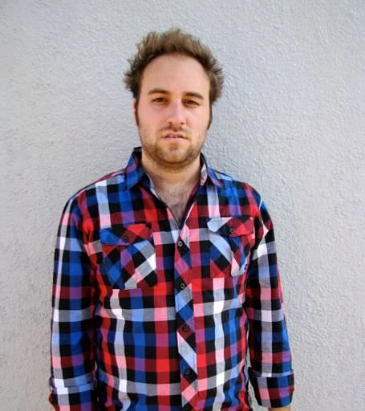

biografia
Twenty One Pilots (estilizado en minúsculas o como twenty øne piløts) es un dúo musical estadounidense de Columbus, Ohio. La banda se formó en 2009 por el vocalista Tyler Joseph junto con Nick Thomas y Chris Salih, quienes se fueron en 2011. Desde su partida, la formación ha consistido en Tyler Joseph y el baterista Josh Dun. El dúo es principalmente conocido por los sencillos "Stressed Out", "Ride" y "Heathens". El grupo recibió un Premio Grammy al mejor pop de dúo/grupo en los Premios Grammy de 2017.
La banda lanzó de forma independiente dos álbumes Twenty One Pilots (2009) y Regional At Best (2011), antes de ser firmada por el sello discográfico Fueled by Ramen en 2012. Su debut en el sello, Vessel, fue lanzado en 2013. El dúo logró un éxito revolucionario con su cuarto álbum, Blurryface (2015), que produjo los exitosos sencillos "Stressed Out" y "Ride" y se convirtió en el primer álbum en la historia en el que cada canción recibió al menos una certificación de oro de la Asociación de Industria Discográfica de Estados Unidos.23 El lanzamiento del sencillo "Heathens" también convirtió al grupo en el primer artista alternativo en tener dos sencillos entre los diez mejores concurrentes en los Estados Unidos. El quinto álbum de estudio del dúo, Trench, fue lanzado el 5 de octubre de 2018. El 21 de mayo de 2021, el dúo lanzó el álbum Scaled and Icy.
albumes
Twenty One Pilots
Twenty One Pilots es el álbum de estudio debut de la banda estadounidense Twenty One Pilots , lanzado de forma independiente el 29 de diciembre de 2009. El álbum vendió 115.000 copias y alcanzó el puesto 139 en el Billboard 200 de EE. UU. el 13 de enero de 2017.

Regional at Best
Regional at Best es el segundo álbum de estudio del dúo musical estadounidense Twenty One Pilots . Fue autoeditado el 8 de julio de 2011. Regional at Best es un álbum descontinuado. Es el último álbum lanzado por la banda antes de firmar un contrato discográfico con Fueled by Ramen , y es el primer álbum que presenta el talento de Josh Dun , quien se unió a la banda en 2011 después de la partida del bajista Nick Thomas y el baterista Chris Salih. .
El álbum presenta muchas pistas que también aparecen en Vessel , y algunas de ellas se volvieron a grabar para el álbum posterior. Como parte del acuerdo de la banda con Fueled by Ramen para lanzar Vessel , el álbum fue descontinuado, sin copias físicas o digitales disponibles para la venta. Solo seis pistas de Regional at Best no aparecen en ningún otro álbum y se consideran agotadas. Algunas de las pistas del álbum están disponibles a través del servicio de transmisión de música Pandora. El álbum completo solo está disponible en Deezer.

Vessel
Vessel es el tercer álbum del grupo estadounidense Twenty One Pilots, lanzado el 8 de enero del 2013. Es el primer álbum de estudio de la banda grabado con Fueled By Ramen, después de lanzar dos álbumes independientes, Twenty One Pilots (2009), y Regional At Best (2011). Al igual que este último, Vessel tiene influencias del indie pop, el electropop y el rap, y cuenta con un contenido lírico de enfermedad mental, depresión, y suicidio; pero también religión.2 Sin embargo, no cambió mucho respecto a su predecesor, Regional At Best, ya que fue una remasterización con mejor calidad con algunas nuevas canciones y dejando las anteriores como bonus track.
Blurryface-2015
Al igual que su álbum anterior Vessel (2013), el álbum toma influencia de varios géneros, incluidos hip hop, rock, pop, reggae y indie. Líricamente, el álbum incorpora temas de salud mental, duda y religión. Contiene los sencillos exitosos "Stressed Out" y "Ride", que alcanzaron el top 5 en Billboard Hot 100.
Blurryface fue bien recibido por los críticos, quienes felicitaron sus temas y diversidad musical. Se considera que es el álbum revolucionario de la banda, convirtiéndose en el primero en alcanzar el número uno en Billboard 200. El álbum ha vendido más de 1.5 millones de copias en los Estados Unidos hasta abril de 2017. En 2018, Blurryface se convirtió en el primer álbum en la era digital en tener cada pista recibió al menos una certificación de oro de la Asociación de Industria Discográfica de Estados Unidos.78 El 15 de mayo de 2019, alcanzó el hit de estar en la lista Billboard Top 200 Album durante cuatro años, sin abandonar nunca la lista.

Trench
Trench es el quinto álbum de estudio del dúo estadounidense Twenty One Pilots . Es el tercer álbum de estudio de la banda lanzado a través de Fueled by Ramen . Fue lanzado el 5 de octubre de 2018.

Scaled and Icy
Scaled and Icy es el sexto álbum de estudio del dúo musical estadounidense Twenty One Pilots . El álbum fue lanzado el 21 de mayo de 2021 a través de Fueled by Ramen y Elektra. El título del álbum es un juego de "reducido y aislado", una frase que el líder Tyler Joseph asoció con la música producida durante la pandemia de COVID-19 , aunque la frase también es un anagrama de "Clancy is dead". una referencia al protagonista de su anterior disco, Trench .

integrantes
Tyler Joseph 2009-actualidad
Tyler Robert Joseph nació el 1 de diciembre de 1988 en la ciudad de Columbus, Ohio. Creció junto con tres hermanos, Zack, Jay y Madison. Su madre, Kelly, era profesora de matemáticas en el distrito escolar de Olentangy antes de pasar a ser entrenadora de baloncesto en la escuela Olentangy Orange High School en 2013. Su padre, Chris, también trabajó como entrenador en la escuela Worthington Christian High School desde 1996 hasta 2005, y actualmente es director de escuela. Joseph jugó al baloncesto desde muy temprana edad, y jugó como base en la escuela de su madre. En 2008, el equipo de baloncesto de Joseph quedó en segundo lugar en un torneo estatal. Después de ver a un compositor en el club High Street, rechazó una beca de baloncesto de la Universidad de Otterbein, y comenzó a tocar música después de encontrar un viejo teclado en su armario (un regalo de Navidad de su madre).
Josh Dun 2011-actualidad
Josh nació el 18 de junio de 1988 en la ciudad de Columbus, Ohio. Tiene dos hermanas, Ashley Dun y Abigail Dun, y un hermano, Jordan Dun. De acuerdo con Josh Dun, aprendió a tocar la batería por su cuenta, y cuando era niño no tenía permitido escuchar música pero se colaba a una tienda de música una vez a la semana y allí pedía sugerencias a la gente, Trabajó en una tienda de Guitar Center durante tres años, junto con el exbaterista de Twenty One Pilots, Chris Salih.
En 2010, Dun asistió a un show de Twenty One Pilots después de haber sido invitado por el entonces baterista Chris Salih, y de haber escuchado el demo de la banda, Dun quedó impresionado con la actuación del trío. Conoció al vocalista principal, Tyler Joseph, después del show, y un par de días más tarde ambos se volvieron amigos. Un año después,en el 2011 Nick Thomas y Chris Salih dejaron la banda, y Dun eventualmente abandonó su trabajo en Guitar Center para poder tocar en un show con Joseph. Tocó una canción antes de que el espectáculo fuera interrumpido y cancelado por agentes de policía. Después de aquello, Dun se convirtió oficialmente en el baterista de la banda. El dúo lanzó su segundo álbum de estudio de la banda, Regional at Best, el 8 de julio de 2011, y firmó con la discográfica Atlantic Records, sello subsidiario Fueled by Ramen, en abril de 2012. En agosto de 2012, se embarcaron en una pequeña gira con Neon Trees y Walk the Moon.

Nick Thomas 2009-2011
Nick Thomas es el ex bajista de Twenty One Pilots. Junto con Chris Salih , el ex baterista, Thomas dejó la banda en 2011 por motivos personales. Thomas publicó su publicación de despedida el 4 de junio de 2011 en Facebook.
Chris Salih 2009-2011
Chris Salih (nacido el 18 de septiembre de 1985) es el ex baterista de Twenty One Pilots . Junto con Nick Thomas , el ex bajista, Salih dejó la banda en 2011 por motivos personales. Salih publicó su publicación de despedida el 8 de mayo de 2011 en Facebook.
